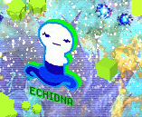
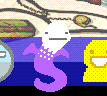

Don’t talk to me there was no John and Rose first meeting nor did John and DAD reunite and hug a thousand times, there was a severe lack of hugs AND I’M SUING HUSSIE
Basically… Same old, same old. Also find out how many times i can misspell Typheus in one sentence… Or was it Typhoeus… Typhus… Nope. Typhoes— Fuck.
Oh, he is Davesprite now? I thought you called him “orange dave”? Or alternatively not the real Dave? That code he gave to you sure seems real as it will be the item he wanted to give to you as a gift. You know what also is real? The fact that you are a real butt, John.
HOLY CRAYONS. I think Dave forgot that John is very tiny also that it is already a miracle that he can raise his regular sized hammer above his head without passing out anymore. Nobody can even yield that thing?? Also I don’t know how much grist he owned in the alt timeline but we common mortals in this timeline over here are still very poor!! :(
John: Shrink it down.

Forged directly from the lava of the hottest volcano in Dave’s land. That looks like a very powerful hammer! Fear No Anvil, Fear No Evil?? Does that mean that it can kill anything? And also it probably has time powers, those look like the hands of a clock! Shame that John won’t be able to keep it for long, it doesn’t fit his color scheme! Nor his element, like not at all.
– ectoBiologist [EB] began pestering turntechGodhead [TG] –
EB: so what is this?
EB: the thing the code made…
TG: really powerful hammer
Thanks for telling us everything we already knew, Dave. I feel truly enlightened by knowledge right now. Your wise words have made everything suddenly clear and there is no room for doubt anymore.
EB: how do you know?
EB: i thought you couldn’t use hammers.
TG: i cant
TG: better be though
TG: got it from hephaestus
HEPHAESTUS??? The god of fire, volcanoes, metals etcetera, etcetera??!?! What?? Is that Hephaestus’ fucking hammer?? Where do the Greek Gods come from now? This is great. Now I will have to rack my brain over how in heck do Greek Gods feature into this game. I really didn’t need this right now.
EB: who’s that?
TG: really tough to kill dude
YEAH, NO SHIT. He’s a god! This is, quite frankly, kinda ridiculous? I don’t think he is killable. And of course the hammer is gigantic! Greek Gods are depicted as such! Or they are in Percy Jackson books… umh.
EB: you killed him for it?
TG: nope
EB: how’d you get it then?
TG: shenanigans
EB: ok.
That sure explains everything. And seriously? You’re not even a little tiny bit curious, John? And since Dave is not bragging about his heroic escapades with the gods I’m just going to assume that he got his ass handed to him. But why would you want to kill Hephaestus, even if you could? He has quite the shitty past. Poor dude got exiled from Olympus because he was ugly. By his own mother. Then he was allowed into Olympus again but his wife cheated on him with freaking Ares. :(
Rose: Check out Dave’s computer.


It seems you have a visitor.
Ambush him, Rose. It’s his fault that Dave got his hands on your journals.
I know it’s because we are on Derse but really, does even his desktop have to be purpLE HOLY SMOKES HEPHAESTUS. …How did I manage to forget?? The kids browsers??? Hephaestus, Typheus and whatnot?? We know those things exist for real. There is one for every kid. They match their color schemes and powers.
John has Typheus.
“TYPHOEUS (or Typhon) was a monstrous immortal storm-giant who was defeated and imprisoned by Zeus in the pit of Tartaros. He was the source of devastating storm winds which issued forth from that dark nether realm.”
MMMMMMMHHHHHHMMMMMHHH. So we fight fire with fire and wind with wind, huh? Well, wind with Breath, but same thing. Breath, Heir, Air, Wind. The kids’ roles are one big pun, I swear.
Echidna for Jade. Well, I can’t find any connection with Space but then again neither is Hephaestus connected to time. She is however the Winter Snake Goddes, and we’ve got lots and lots of snow on Jade’s Land?? Half-snake, half-woman. Well, with the head and breast of a woman. “She probably represented or presided over the corruptions of the earth : rot, slime, fetid waters, illness and disease.” Also she was Typhoeus’ spouse. Umh. Oh, boy, please don’t be foreshadowing of anything involving John and Jade because… I don’t really like them together in a romantic way. Plus, I kind of have some theories about the two of them that have still to be proved wrong. Or right. I’m like 85% percent sure of it.
Also….. Excuse me I don’t mean to be rude to Miss Echidna but????

Doesn’t look anywhere like a woman to me.
…………………………………………..WAIT FUCK WAIT FUCKING FUCK. DIDN’T JOHN AND JADE SWITCH COLORS???? John, stop making everything such a mess. Oh, noes, now I have to find John’s and Jade’s browser icons this is going to take HOURS. That’s not Echidna that’s Typheus up there. Truly sorry, Mister, didn’t mean to mistake you for your beautiful wife….. This was an embarrassing mishap.

YEAAAAH. Typheus. Typheous. Typhon. Whatever the fuck you wanna call him. All windy and stuff.

THIS TOOK FIVE FUCKING HOURS. FINDING THIS LITTLE SHIT OF A SNAKE. With breasts?? And eyelashes?? Okay?? But how is that a human head. Well, considering how characters are portrayed in this webcomic she could just be bald.


WHAT THE FUCK IS THIS THING EVEN AND WHAT’S UP WITH ITS FACE I’M LAUGHING SO HARD
OH GODNESS. Okay, it says Cetus. It’s like… a mermaid with wings or something…….. I don’t even know….
“In Ancient Greek, the word kētos (κῆτος, plural kētē or kētea, κήτη or κήτεα)—Latinized as cetus—denotes a large fish, a whale, a shark, or a sea monster.[1] The sea monsters slain by Perseus and Heracles were each referred to as a cetus by ancient sources.[2] The termcetacean (for whale) originates from cetus. In Greek art, cetea were depicted as serpentine fish. The name of the mythological figure Ceto is derived from ketos. The name of the constellation Cetus also derives from this word.”
“When Cassiopeia boasted that her daughter Andromeda was more beautiful than the Nereids, this invoked the wrath of Poseidon who sent the sea monster Cetus to attackÆthiopia. Upon consulting a wise oracle, Cepheus and Cassiopeia were told to sacrifice Andromeda to Cetus. They had Andromeda chained to a rock near the ocean so that Cetus could devour her. Perseus found Andromeda chained to the rock and learned of her plight. When Cetus emerged from the ocean to devour Andromeda, Perseus managed to slay it. In one version, Perseus drove his sword into Cetus’ back. In another version, Perseus used Medusa’s head to turn Cetus to stone.”
Well, a sea monster. On Rose’s Land. What a surprise. But I can’t seem to find any connection with her role. There is the fact that she is a Seer and Cetus is a symbol of misfortune or bad omen. But that’s about it.
Also you would think Nanna would mention all these bad guys running around on the kids’ Lands?? She should quit the coy riddles and actually try to give us useful information for once. I mean… they evidently don’t fall under the imps category of bad guys. They aren’t made of shale or chalk…. I should have paid more attention to these things. >_> And they’re apparently pretty fucking strong since Davesprite, same id who had entered the Fifth Gate and killed ogres without difficulties had to beat a retreat WAAAIIIIIT A MOMENT. This is not the only time that this happened to Dave though, I think he also faced another powerful enemy with poor results OOOOHHH MYYYYYYYYYYY LEMME CHECK
TT: You’ll remember the plan we discussed?
TG: theres not much to remember
TG: i go back and tell john not to be an idiot and get trolled like such a gullible stooge
TG: i dont know what he was thinking
TG: even we couldnt kill one of those things yet
TG: with our higher levels and all our sick gear
It’s a long stretch but didn’t Rose and Dave try to fight their Denizens and had to flee because they weren’t ready?? Those creatures are one for each kid, they fit the kids’ Lands and their color scheme, are really fucking strong, they are enemies who get a name, a personality, a thought process, they could as well as be the final bosses of the lands, considering that they have strong connections to their characteristics. Okay, maybe it is not a long stretch, maybe it is kind of obvious. Although I’m not completely sure. Truth is I’m whining because I really wanted them to be dragons as there is a severe lack of those wonderful creatures in this webcomic. Oh, well. Gotta bear with it. ……But dragons are so fucking cool, talk about missed opportunities…..

She just disappeared?? I thought when their real self awoke their dreamselves would have fallen asleep?? Or did she teleport to her tower. Who knows. OH, BUT. Look at Rose’s arched eyebrows, so wonderful. “Excuse me, I have a nerd to sass up now.” Don’t worry, I’m sure Dave understands. WAIT ARE JOHN AND ROSE ACTUALLY TO MEET FACE TO FACE OH MY GOD HOLY GOSH FUCK YEAHHH BRING IT ON

Nobody just… snaps awake like that. You gonna bump your head on something and get a concussion one day, Rose. And John’s daughter is closely guarding her. What a loyal salamander. It’s a shame that her father abandoned her.
I thought there was nothing to fix? That the problem was only GA being incompetent with technology. I bet she would try to put the F1 key back in its place with some super glue.

There’s nothing to fix. Just got to open the viewport. It’s easy.
I told you. Plus he bitched for half an hour to do something that took five seconds. TA, if I didn’t do exactly the same multiple times everyday I would be judging you.

And after Google Lowas, Trollian. Truly we are reaching such levels of ridiculous. I make Hussie a little curtsy and channel my inner suspension of belief for a little more. Oooh, and what’s with the darker and lighter shade of the timelines’ background?? I wonder if means before and after entering The Medium?? Please, no. I was kidding when I said Jade would have taken two decades!! At this pace she will enter in Act 6! And why do I keep delegating everything that has to happen to Act 6 anyway!

GA, are you fucking serious. You just had to click. I can sadly share TA’s sentiment, everybody should hide their technological devices when you show up!

Someone has been using your Pesterchum account.
And you somehow doubt the culprit was this young upright amphibian presently throwing a fit.
She misses her father! :( …Or her true mother. Or her birthplace, her family, her childhood— OH, GOD. JOHN, YOU MONSTER, YOU BROUGHT HER AWAY.

Wow, that cruxtruder really has seen brighter days in its short existence.
You hurry to the door so you can catch John before he goes gallivanting off somewhere.
But it seems your door is ajar. Funny, you don’t remember leaving your door ajar. Even though it’s sort of absurd for you to take note of such a thing, considering John recently left your room.
Oh well, it doesn’t matter. You will now proceed through this door uneventfully.
You wanna wake her up with a waterbomb. SERIOUSLY?? THE FIRST TIME YOU MEET YOUR FRIEND FACE TO FACE AND THAT’S WHAT YOU LITTLE SHIT COME UP WITH THIS IS the best idea you’ve ever had, John.

Oh, God. Look at those eyes. She only reserves that look for her mother’s antics and Zazzerpan. John, make a death wish, soon her hands will go to her needles and it won’t be to knit you a scarf.
You get dumped on by a bucket full of HELLACIOUS BLUE PHLEGM ANEURYSM GUSHERS as a thoughtful but mischievous thank you gesture from John.
Your PRANKSTER’S GAMBIT plunges to an all time low. You cannot hope to defeat Egbert in a prank-off. He is simply the best there is.
Oh, pleaaaase. Back in the days DAD and Nanna were THE SHIT. People fled the country to escape their tricky wrath. Those were truly days of terror. I don’t know if Casey is being sympathetic or laughing her amphibious ass off proving that she is just as much of a little shit as her self accounted father.

Rose obviously isn’t waking up any time soon. Might as well take some time to explore, and maybe stop by again later.
NO
NONONONONO
JOHN I SWEAR I WILL SLICE YOU UP CAN’T YOU STAY IN ONE PLACE FOR MORE THAN THIRTY SECONDS DON’T YOU FUCKING MOVE…………..PLEASE

Why, Doctor Meowgon… do you want to come along for the ride? It sure looks that way.
Ok, hop aboard then. Adventure awaits.
John Egbert, don’t you dare touch the kitty. Rose has already had a cat disappearing on her watch and we all saw how that went. And Mutie just rolls with it. Oh, the stink of betrayal. But this is just how karma works. Rose ditched Jaspers for Mutie? Well then, Mutie ditches Rose for John.

JOHN, NO. JOHN, WHY. JOHN, FUCK YOUUUUUUUUUUUUUU

nO ROSE OH NO. ……..
What is this sound I just heard. It sounded like something shattering. Oh, no. There goes my heart again. Gonna search for some vinilic glue. BRB.

At least she doesn’t seem that sad.
Where is he off to now?
TO ADVENTURE!! Adventure is always calling, sweetie, I’m sorry. John just can’t resist—
At least you have this little fellow here to keep you company.
OH MY GOD I WAS WRONG SHE’S UPSET AND SHE WANTED COMPANY AND I’M GOING TO KICK JOHN IN A VERY SENSIBLE PLACE
You will name him Viceroy Bubbles Von Salamancer.
John won’t approve. Also she will always be Casey to me. Sweet, wonderful, loyal Casey.
But you know how their first meeting will really go?? John will be a giggling bundle of nerves because Rose weirds him out a bit. So he just keeps talking trying to shoo the awkward away. Rose stares. Somehow John ended up giving a critique review of all the McConaughey movies of the past few years and he is really passionate about it. She wonders if he is ever going to stop. Is he even stopping to catch his breath? It’s been almost ten minutes. She off-handedly pesters Dave. (“So how did you manage to shut John up when you first met.” “tbh there wasnt much talking going on at all” “……” “whats with the ellipses” “…………” “WE HUGGED KEEP THE SLASH FOR YOUR SICK FANFICTIONS YOU PERV”)
……..I tried keeping this liveblog shipping free. I failed. I failed everyone, I’m truly sorry. You will have to deal with my multishipper self. I swear I ship John with every freaking character in this webcomic. …Beside Jade. Please Hussie, not Jade.
LET’S NOT BE THE PUPPET. EVER.

You have no idea what the hell that means.
But yeah, you can kiss that obnoxious puppet goodbye. Maybe now you can get a decent night’s sleep.
I do remember Dave mentioning…………….Oh. Oh. But. But what the fuck. How about the fuck no. No. No. NONONO NO NO
TG: oh man i wish lil cal wouldnt look at me like that
TG: with those dead eyes jesus
TG: sometimes i dream that hes real and hes talking to me and i wake up in a cold sweat and basically flip the fuck out
BUT DAVE HAS NEVER BEEN DREAMING DAVE HAS ALWAYS BEEN AWAKE HOLY FUCKING SHIT HOOOOLY SHIT HOLYYYYYYYY AAAAHHHHHHHH
….
…………
………………….
This is fine. *shows up with tunic, rosary beads, a cross, holy water and garlic* You ask what I’m doing. I shrug. “Exorcism. Four acts. I’ve had to stand this for four acts already. Enough of this bullshit.” I say. You wonder why the heck I’ve got a garlic necklace around my neck. “BETTER SAFE THAN SORRY.” I say.
I am deeply displeased. I doubt that Cal was singing lullabies to our Dave. I’m just happy that this is over and Cal stays the hell away from the kid from now on.

Goodbye, Cal! Here is to never seeing you ag—

OH COME THE FUCK ON. FUCKING FUCK WHY CAN’T WE HAVE NICE THINGS. Does the rocket board have a remote control?? Is BRO here?? Bro, are you aware that the fucking puppet abomination is sentient and can talk too? And has been talking to yo lil bro for quite a while?

Ok, this is the most ridiculous thing you have ever seen. What is taking place here is almost certainly illegal.
You’re not sure which laws are being broken, but it is probably a lot.
Apparently you can’t fly on rocket boards while on Derse. There is a law especially against this. The backstory involves eight y/o Jade, that one time Grandpa gave her a Squiddles themed rocket board, the kid flying way too fast, Bec teleporting her away instants before she smashed against a Prospit tower, and building damages for many boondollars. The news raised such a ruckus that Derse decided to take precautions against it. Hence the law. Jade still has to pay for the damages tho.
AR?: Follow.

AR is the only living being crazy enough to follow a puppet flying on a rocket board all on its own. Doesn’t this whole affair ring some alarm bells?? Didn’t his parents warn him. Never talk to nor follow stranger sentient puppets, AR.

You spy a boat on the shore of one of the islands below. You wonder who could be out here rowing in the middle of the ocean.
You can stop wondering, John. Because this question has an easy answer. It’s just MOM going on adventure.


It freezes enemies in time while you attack them I think?? GODDAMN, DAVE. What did he even do to get it?? He can’t chaptalogue something that big and I doubt Hephaestus was just feeling magnanimous and gave the code away. Also, it pictures not only the hours in Roman numbers but the Zodiac for some reason?? The months of the year too.

There’s a platform over here. You guess you’ll go stand on it oh wow it just made you disappear.
JOHN DON’T STAND ON DANGEROUS LOOKING PLATFORMS DON’T TOUCH UNKNOWN OBJECTS STOP ENDANGERING YOUR LIFE SO CARELESSLY S.T.O.P.
WAIT DIDN’T MOM USE THIS TRANSPORTALIZER. ARE THEY GONNA MEET.

What the uppity flickity heck. ….I’m running out of ways to express surprise and I’m not a fun of gifs. This is The Veil, right????

GRANDPA IS HERE. DAD IS HERE. DAD. IS. HERE. DAD. EGBERT. DAD.
JOHN AND DAD REUNION???!!!!! JOHN AND DA REUNION FUCK YEAH YEAH OH MY GOD FUCK YES????? John, run in slow motion toward each other, do what you want, slam into each other at the speed of light, I don’t care as long as there are many hugs delivered. I will take no less than twenty.

Now what in the hell is going on in here.
The guardians brought some presents, John. Cal came probably on its own. I suggest you stay away from it since there have been some troubling discoveries lately. On the line of HOLY SHIT THE PUPPET IS ALIVE EVERYBODY RUN TO SHELTER. Yup, something like that.

Now what in the hell is going on in here.
HOLY SMOKES ASCENDING FOR THE DEPTHS OF WHAT THE HELL IS THIS EVEN
So this is how all the chess pieces are created. They are cloned? Even though every single one of them has their own personality, dreams and silly obsession. And they will be sent on a battlefield and slay each other. But they are just pawns. Literal pawns. You know, I think the saddest thing is really just everything that the Prospit and Derse inhabitants have to endure.
The platform has numbers engraved on it? I guess… From zero to 360 degrees. Round angle. And there are…. Registering tapes in the background?? What? What do we even need those for??
> John: Who cares, just ride the pony already.
ARE YOU FUCKING SERIOUS JOHN

HE IS FUCKING SERIOUS. SO SERIOUS YOU WOULDN’T BELIEVE IT.
Now. This is just fantastic. He took away from Rose both her cat and her pony. He’s just aiming to take everything and everyone she loves from her. Hey, now that I think about it….. Mom is probably here too……… and John never had a mother…….JOHN, YOU WOULDN’T DARE. But you know, actually he would never think of Mom’s gestures as any less than completely genuine….. Neither would Dave or Jade…. It’s all in Rose’s head… o(╥﹏╥)o
But seriously what in the hell is going on in here.
> John: But seriously, keep exploring.
I love the way this story is narrated though. And I’m not even a fan of second person narrative but here it’s done in a cool and charming way. Meta too. So meta you cannot handle it.

You find a sweet getup. It’s almost as if it was tailor made for you. How weird would that be???
John, this is predestined serendipity crap. When will you understand. It’s all written in Paradox Space’s stars.

HOLY CRAYONS. We are gonna do Ectobiology. I mean… right now. This is a lab!! And we have got an Ectobiologist, a predestined one at that… with a cool new get up for the occasion too….. AND THERE ARE FOUR MONITORS TOO SO I COULD BE RIGHT ABOUT THE KIDS’ DREAMSELVES?? THAT WAS THE WILDEST GUESS IN THE HISTORY OF WILD GUESSES WHAT THE HECK
I should guess randomly more often……
> AR?: Resist urge to ride bro’s rocket board.
FUCKING POV SWITCHES, MAN. I would say he fails to resist the urge but he’s way too uptight to do that. He needs to loosen up.

You fail to resist the urge.
HOLY SHIT THE BIGGEST PLOT TWIST
You start thrashing up stunts something uncannybrutal on your quest for “MAD JUSTICE YO” and get this way rude municipality under control. Shit is basically flying off the hook. It’s like shit wants nothing to do with that hook. The hook filed for divorce from that shit and is now seeking custody of the hook and the shit’s two kids.
FUCK YEAH. If that isn’t loosening up, I don’t know what is. May I remind AR that the hoverboard is however not his property? AR! You’re breaking the law!!!! I mean… Real ones, not only the ones of physics! This is only the beginning of what he will spiral into. Soon we will see him as Jack Noir’s right-hand man. The adrenaline of breaking the rules is now nothing but a drug for him. He wants to stop but he just can’t. Once Jack has no use for the dude anymore, he exiles him to a deserted Earth. Hey. This is a big mystery that I just solved.

These hops are unreal. Shit this flagrant should be illegal. It probably is.
But you don’t care.
AR!!! You’re being so incredibly cool that even our Mystery Arm’s owner wants to high five you!! :D
> PM?: Prepare to depart for battlefield.
Back with PM!!! Man, the exiles make this webcomic 130% better. She is ready to depart for her super important journey.

You have traveled to Prospit’s moon to board a shuttle headed for the BATTLEFIELD. There you will seek the counsel of the WHITE KING.
Yup. He’s gonna give her instructions on how to protect the ring. Too bad nobody did anything of the sort for the Black Queen.

Who’s that.

WHO’S THAT.

PFFFFTHAHAHA. Hello Deuce. Or whatever your name is in this session. I guess he is a hat lover instead of a clock one in this session. :’)

Is that… a make believe sword through his torso. Amazing.
WHAT.


You pilfer the WHITE QUEEN’S RING.
PM!!!! PM, NO!!! WHAT THE HELL!!! And then you wonder why Prospit loses the war. Jack already got his hands on a ring though?? What are they going to do with another?? They may want to keep it so that Prospit doesn’t have a monarch anymore??

None the wiser, you board the shuttle. Next stop, Skaia.
GODDAMMNIT PM.

You receive an incoming message from the DRACONIAN DIGNITARY. You tell him you’ve got the ring. He says good, bring it to him while he waits for an update from the HEGEMONIC BRUTE who’s been tracing the king’s movements down on the battlefield.
He asks if you’re still wearing that ridiculous outfit. He says you don’t have to anymore, by orders of the SOVEREIGN SLAYER.
You say…
You say you’d still rather wear the outfit.
He’s got nothing to say about that.
SS. Sovereign Slayer. Jack Noir!! I don’t like his new title. Especially the Slayer part! Quick! Someone lock Rose and Dave in their towers and throw the keys!!

HOLY HECK, JADE!

HOLY HECK, JADE!!!!!

Yeah!!! Show him who’s boss!!!

JADE STOP SHOWING HIM WHO’S BOSS YOU’RE DESECRATING YOUR GRANDPA’S BODY


HOW IN HECK DID JADE SEND THAT HAT SO FUCKING FAR IT NEARLY REACHED FREAKING SKAIA. WE DON’T NEED NO SHUTTLE TO GET THERE. YOU GOT SOME POWERFUL MOVES, JADIE HONEY. That Prospitian has been watching from afar for about 100 pages, this is getting suspicious. Beat it, dude. There’s nothing to see here, just Jade getting her badass on. So. Fucking. Badass. You know sometimes I think Rose may outrank Jade in my favorite character’s list but then. Jade comes back into action. And casually does things like this. And wow. No. That is not happening anytime soon. Sorry, Rose. ILU, but no.

It’s too late. She’s gone. You’ll have to remember to deliver it later, somehow.
You will find a way, Jade. You always find a way. Those kind of things are your specialty.

The best way to remind yourself that you’re carrying a ring is to put it on your finger.
AHGSAKDJFJSAAAAAAAAHHH WHAT THE HELL JADE NO NONO NO NO THATS STUPID STUID STIPID STUPID

SHE’S IMAGINING THIS RIGHT???????????????

Of course that was just an imaginary transformation, since the ring doesn’t work like that on humans. It was fun to pretend though.
Jade, stop scaring me and being furry trash already. Oh, thank godness. I’m sure you would have rocked those wings and everything else but a sword through your abdomen isn’t exactly a pleasurable experience. Davesprite can tell you all about it.
> Meanwhile, in a Timeless Expanse…

Somewhere, a WARWEARY VILLEIN rues eternal struggle between feuding royalty.
The BATTLEFIELD holds little promise for the peaceful life of a simple farmer.
WV’S BACKSTORY!!!! Oh. Oh no. He was a farmer. A farmer in a battlefield. OH MY. That’s why he likes vegetables so much. And the color green. Aww. :( I misread villein as villain at first and I thought THAT’S IT. I KNEW HE WAS THE TRUE FINAL BOSS.
| > [S] WV?: Rise up. |
SEE???!! THIS IS THE FLASH IN WHICH HE WILL RAISE TO POWER!!!!!! :V
But I’m going to watch him doing just that TOMORROW. As I am too tired to function at the moment. Or actually understand what’s going on in a flash.